The Deplorables vs the Hysterics - from Maastricht to Trump
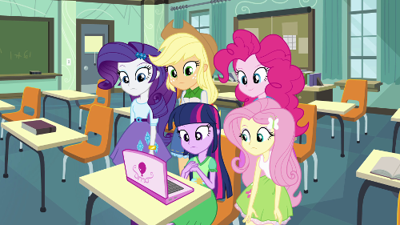2016 led to a clear divide between the Deplorables and the Hysterics. Where did this come from? What is the historical context of Brexit? What should we in the UK make of President Trump? What role did technology play in making this division?
This is another long read typed at the speed of thought, as always, corrections and improvements are appreciated.
1. Where to begin
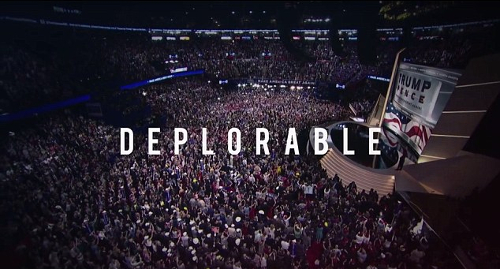In my first essay on Brexit, Rome Vs The Matrix, I started at the last Ice Age and went through each of the attempts to include Britain in a United Europe project. This post will be somewhat more modern.
The 1975 referendum was a Labour affair, the pro-EU yes campaign led by Harold Wilson and the No campaign led by the great Tony Benn.
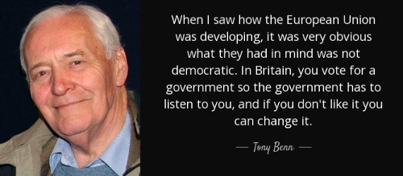In 1975, Benn and the leavers were accused of wanting to turn the UK into an island of socialist utopia, it is not so relevant to this current hysteria.
Therefore, I will start my story at 1992, for in retrospect, this is where the Leave campaign began its march to successfully winning a referendum on leaving the EU in 2016.
1. Maastricht Rebels - the battle of the bastards
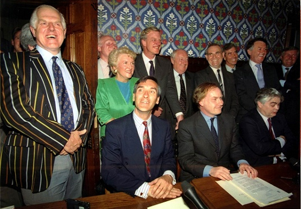One of the reasons that Prime Minister Margaret Thatcher’s long and electorally successful leadership was challenged by her own party was her resistance to further European integration.
Under her more successor, John Mayor, the 1992 Maastricht Treaty was negotiated. This converted the European Community to the European Union, including European Economic and Monetary Union (the Euro being finally set up on in 1 January 1999), but also lots of other areas of policy being handed over to the European level.
This was not popular in the British parliament. Ratification was not easy or quick and took another 18 months. A vote on one wrecking amendment was tied 317-317 and only defeated because of the 1876 convention of the speaker breaking ties by voting no.
Prime Minister John Major famously called three members of his cabinet (Michael Howard, Peter Lilley and Michael Portillo), the “bastards” - which was a still a controversial insult back in 1993.
Meanwhile, while this Tory civil war was happening in Parliament, over at the Bank of England and the Treasury, there was a different European problem.
The inability to find an interest rate that would fit both Germany and the UK led to a run on the pound and consequently the UK being ejected from the European Exchange Rate Mechanism on Black Wednesday, further pushing the UK away from Europe.
The combination of Black Wednesday, the way Thatcher was deposed and the way Prime Minister John Major ruthlessly pushed the Maastricht Treaty through parliament, splintered his party and the wider conservative movement, and now in retrospect, sowed the inevitable seeds of Brexit.
The elite MPs in control of the party machine had become de-anchored from the mass of the Conservative party membership and the general public. This led to a landslide defeat at the 1997 election and 13 years out of power.
However, those anti-EU forces created in the Maastricht ratification process continued in the background.
Some of the leading 1992 rebels are still in parliament, for example, Sir Bill Cash. While some of the younger ones, such as Dr Liam Fox and Iain Duncan Smith, became the backbone of the Leave campaign.
Outside of the Tories, UKIP was began in response to the Maastricht Treaty, it came into being between 1991 and 1993. On the day John Major signed the Maastricht Treaty, an up and coming 27 year -old conservative called Nigel Farage quit the Tories and became UKIP’s first nationally recognised leader.
2. The great Euro non-debate
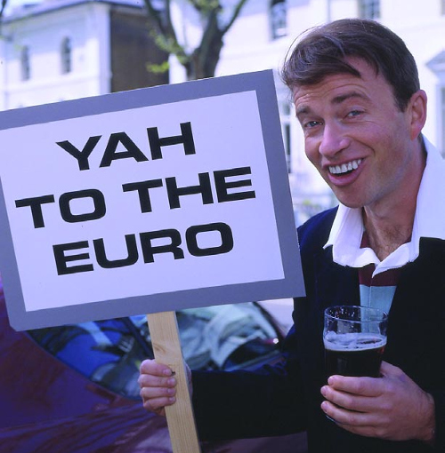By 1996, Britain’s place in Europe was not clear, with the Tory members and much of the public wanting less Europe, while the pro-EU John Major and big business wanting the UK to join the Euro in time for its launch in 1999.
For ten years between 1995-ish to 2005-ish, there were two competing campaigns on the Euro.
There was the campaign, financed by big business, for Britain to join the Euro, with prophesies of doom and irrelevance if the UK didn’t join.
This culminated in the group Britain in Europe led by Tony Blair (in theory but unwilling to expend political capital on it), Gordon Brown (in theory but in practice going the other way, as we shall see below) as well Ken Clarke, Michael Heseltine, Charles Kennedy and so on.
Meanwhile, on the other side, the was No Campaign primarily backed by Sir Tim Rice of musical theatre fame and supported by all the “bastards” from part 1 above.
All this preparation by the two campaigns happened in a kind of political-geek parallel universe, it never bothered the general public. Eventually, the money ran out and the two campaigns faded out before they really started but it was a practice run for 2016 when many of the same characters and same old arguments would re-emerge.
3. Things can only get better
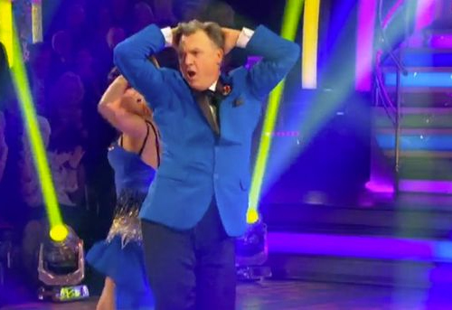In the 1997 election, Labour outflanked the pro-EU John Major by pushing the Euro question into the long grass, with the famous five Economic Tests, reportedly invented by Ed Balls in the back of a New York taxi.
A work of electoral genius, Labour now had defused its own European divisions with this technocratic measure. Those against further integration could see the tests were not currently met and could hold faith that convergence would never happen, while those in favour of further integration could hold faith that convergence would naturally occur and the tests would one day be met.
As it turned out, the UK and Eurozone economies diverged and the prospect of the UK joining the Euro stopped becoming a realistic option to anyone but the most extreme Euro-federalists, a rare breed in the UK.
The UK entered the 2008 financial crisis with more dodgy banks and a bigger national deficit than most of the Eurozone, including Southern Europe.
However, the UK having an independent currency acted as an automatic stabiliser and the UK made it through the crisis relatively unscathed in the short term.
Meanwhile, those in Southern Europe, lumbered with an unsuitably strong currency, suffered immeasurably more, proving the UK had dodged a bullet. The economic situation of Greece is what the alternative future of the UK could have been had we adopted the Euro currency.
4. Big business credibility problem
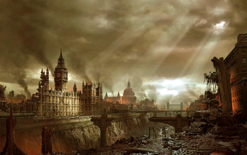The abortive pro-Euro campaign was led by big business such as the City of London banks, Lord Sainsbury and so on, as well as the international institutions and think tanks. The exact same people and organisations that came back in the Remain Campaign of 2016. Not entirely, some like James Dyson and JCB had moved to the Leave campaign.
A lot of the “project fear”-type arguments had been made in the late 1990s and early 2000s about staying out of the Euro. However, the reality of the financial crisis had proved them all wrong, not entering the Euro had saved the UK.
The credibility problem of the UK pro-European campaigners was pretty clear to anyone with eyes to see in the outcome of the UK financial crisis.
Those against the EU since 1992 had been largely winning on democratic and legal grounds but losing the economic argument. However, in the aftermath of the financial crisis, the economic argument for the EU as an economic magic bullet was becoming increasingly untenable as the UK economy recovered steadily while the populations of many Eurozone countries were being collectively punished with mass unemployment in order to keep their economies within the Euro.
This is the background to the later Michael Gove style argument, why trust these people and groups when they always get their predictions wrong?
5. Lisbon Loons
The 2010 Conservative manifesto was called “Invitation to join the government of Britain” (PDF) and on pages 113 to 114 (pdf page number 124-125), promised a referendum before handing over any more powers to Europe.
However, when it came to the Lisbon Treaty, David Cameron weaseled out and said the promise would apply to every treaty after the Lisbon Treaty.
The Lisbon treaty was a massive step forward in the federalisation of Europe and the last major treaty likely to be approved for a long time, so Cameron’s promise turned out to be worthless (like all his other promises).
Some Tory MPs tried to honour the promise anyway, here we quote a 2013 Guardian Article:
The senior Tory made the remarks - in earshot of journalists - after being asked about the decision of 116 Tory MPs to defy the prime minister and vote in favour of an amendment regretting the absence of a EU referendum in the Queen’s speech.
The Conservative said: “It’s fine. There’s really no problem. The MPs just have to do it because the associations tell them to, and the associations are all mad, swivel-eyed loons.”
Major called his rebel MP bastards, the Cameron set now considered the largely Eurosceptic rank and file to be “mad, swivel-eyed loons”. Cameron had the coalition with the Liberal Democrats to average out the Eurosceptism of the Tory membership.
6. Cameron in a corner
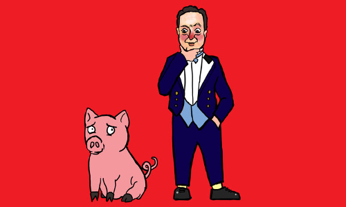Cameron entered the 2015 election with a promise to renegotiate its relationship with Europe and put that to an in/out referendum - page 72 (PDF page 74) of the 2015 manifesto (PDF).
How this was supposed to work in David’s Cameron’s mind probably involved the context of a coalition with the Lib Dems.
In the months before the 2015 election, the media has factored in an Ed Miliband victory or at least the unpopular David Cameron would be scrabbling around for a coalition with the Lib Dems who might be smaller but still significant.
Instead, the Tories won an outright majority, not least because the referendum pledge re-united the grassroots behind the government rather than UKIP. Cameron came back into power in 2015 with a party more Eurosceptic than ever.
The most pro-EU party, the Lib Dems went from 57 seats to 8 seats, i.e. an 86% loss.
While many MPs were loyal to David Cameron in the referendum, they were answerable to extremely Euro-sceptic local parties, and constituencies that were increasingly Eurosceptic too.
In the manifesto, David Cameron had promised to hold the referendum by the end of 2017, however pretty much the day after the 7th May 2015 election, Britain’s place in the EU became the hot topic to the exclusion of everything else.
Almost a year later, in April 2016, I remember thinking then that pretty much every argument that could be made, had been made. Luckily, David Cameron set the date of the vote to the 23rd June.
On the 24th of June, I was like phew, finally we can talk about something else but Britain leaving Europe, but no, the losing side didn’t disarm but carried on campaigning. We still are drowning in this one issue. Anyway I am getting ahead of myself.
Why did Cameron hold the vote earlier than needed? Did he believe it the European issue was preventing progress on any other issue? Did he believe he had it in the bag? Did he want a successful remain vote to be his legacy act before leaving the stage?
Perhaps his hand was forced by Merkel and Hollande, not wanting the UK relationship to become an issue in the 2017 French and German elections (well they failed there).
7. The campaign
I have talked a lot about the campaign and why leave won and the mistakes made by remain. Remain didn’t put their best arguments first. Remain didn’t update their arguments to take account of the 2008 financial crisis and the situation in Greece.
The Leave campaign had seen all the remain arguments coming from 15 years before and were ready for them.
I have covered the economic side in other posts and why Brexit didn’t cause an immediate recession as promised by the project fear (which had lost all credibility in the previous iteration 4 - The Gove argument).
I could talk about a lot of things but want to focus one thing, namely what those who wanted to leave were called by the remain campaigners.
Like “bastards” and “mad, swivel-eyed loons”, the elite hysterically called the people names. I went back to the 9th June 2015 edition of Question Time (link will expire 12th June 2017) and made a list, in this single program, leavers were called:
- Economically illiterate
- Manics that want to burn the economy
- Little Englanders
- Uneducated
- Trying to cause third world war in Europe.
- Liars
- Nazis
- Removing hope from the world
- Causing the breakup of the United Kingdom
- Want to cause a civil war in Northern Ireland
This was just one episode of one program, we had months of it. Later in the campaign it escalated to:
- Old people should not be allowed to vote
- Leavers are all racists that caused the Murderer of Jo Cox and a wave of crime
My favourite was when President of the European Council Donald Tusk said:
I fear that Brexit could be the beginning of the destruction of not only the EU but also of western political civilisation in its entirety.
If the remain campaigners were confident in their economic case, there would not have needed to be this demonising of the leavers. It was an act of desperation, a slow communal mental breakdown of the ruling class, the delayed unwinding of the pre-2008 globalist consensus.
8. The people are not bothered
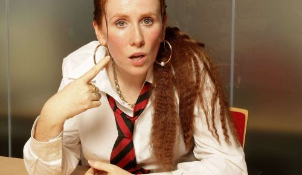Despite all that constant fear mongering and rhetoric by the elite, 52% of the UK voters bravely decided to leave anyway. According to the pollsters Yougov and ICM, many more have joined the cause since the vote.
The institutions and elites and dire apocalyptic warnings have become like crying wolf, they have lost any credibility whatsoever, and just makes those who make them distrusted.
The people have become shame-proof, moan proof. But they remember who calls them names.
I think it is pretty hard to shame anyone into anything, it is not how you win anything. You win by building the biggest coalition. Remain could have possibly built a massive coalition but it didn’t want to, it preferred to call people names, especially the working class and the old.
9. In a galaxy far far away
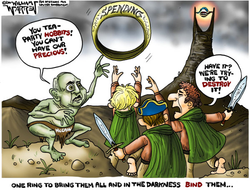Meanwhile on the other side of the pond something else was stirring. In 2011, Republican Senator John McCain called the Republican grassroots “Tea Party Hobbits“
In 2016, Hillary Clinton in her election campaign said:
You know, to just be grossly generalistic, you could put half of Trump’s supporters into what I call the basket of deplorables. Right? The racist, sexist, homophobic, xenophobic, Islamaphobic - you name it. And unfortunately there are people like that. And he has lifted them up.
Donald Trump had over 65 million votes. Any person with common sense knows there is not over 30 million racists and sexists running around.
The situation is not 100% the same as the UK but it is comparable in that it again demonising the population. I always thought Trump would win the Republican primary but this speech was the moment that I knew Hillary would lose.
10. Who is the heck is Trump anyway?
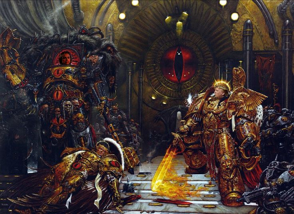The same people calling leavers names, the people with the repeated credibility problems are now telling us that “Trump is literally Hitler”.
The 52% had to become thick skinned already and are suspicious of the elite media and institutions.
I was already slightly immune to this. For almost every US election in my lifetime, the winning President has been called evil or invalid by the losing side. It is all very hysterical until silly season ends and life moves on to some issue of the day.
Reagan was called a second rate actor and conman, until he lead the fight against the Soviet Union and was considered a hero.
Bill Clinton was derided as a socialist who was going to bring back the USSR yet many agree Clinton managed the economy far better than many of his predecessors and successors and kept America safe. It was the end of a golden age which his two successors largely bungled and threw away.
Piers Morgan said that Trump cannot be worse than George W. Bush who lied about weapons of mass destruction to get us into a poorly planned War in Iraq which led to a million civilian deaths and thousands of American, British and other soldiers being killed and even more being maimed.
I have a lot of sympathy for that statement.
Obama was derided as a Kenyan Muslim communist who would introduce death panels to wipe out old people. It is all just hysteria every time.
The greatest American president in history is FDR who saved the world from “literally Hitler” i.e. the actual Hitler.
Based on the limited amount of time that Trump has been in office, perhaps he is somewhere between the extremes of W. Bush and FDR ... as in no-one knows. Presidents rarely are remembered for how they started or what they campaigned for; events happen and the narrative always changes after the fact. Ask me in the year 2047 if Trump was good or bad.
11. Sex is not our business
When President Clinton, a 50 year-old married man, had relations with a naïve and impressionable 22 year-old White House intern, he was criticised domestically.
The UK has quite strong laws and policies on the abuse of a position of trust so a UK politician doing exactly the same thing today would not survive but given the Jimmy Savile revelations who knows what they could get away with back then.
However, in general in the UK, we don’t care about our politicians’ sex lives. This is a good thing.
Most people would find it hard to pick many of our Prime Minister’s spouses or children out in a crowd. We generally leave the spouses and children out of the public limelight. We have the Royal Family for all that.
Andrea Leadsom ended the referendum campaign as one of the winners, a woman on the up, she was in the running to succeed David Cameron as Prime Minister. When she was perceived, perhaps unfairly, to be playing the motherhood card, the media threw it back in her face in the most extreme way and her leadership bid came to a shuddering halt.
The position of the UK government on the Lewinsky scandal was that it was none of our business. When asked about this Blair said the words of Ruth (1:16):
“whither thou goest, I will go; and where thou lodgest, I will lodge: thy people shall be my people, and thy God my God”
Blair was always over the top but here he was correct. The transatlantic alliance between the US and UK is not about the personality of the current leaders, it is a permanent alliance between two peoples with the same language and many of the same values: common law, freedom, the enlightenment, strong defence against our enemies, democracy, rule of law and so on.
What is good for the Democrats is good for the Republicans, let’s not worry what President Trump said to a friend on a bus in 2005. I really don’t want to go down the route of making political capital out of our politicians’ private lives.
As Jesus (may have) said, let him who is without sin cast the first stone.
12. We are not doing a merger
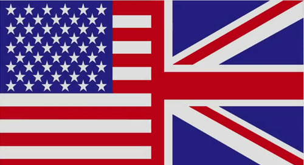The US and the UK have many differences, often determined by our histories and geography.
America feared the Royal Navy would lead a surprise attack on the US and topple the government, so militias were part of the national defence.
The UK doesn’t have a second amendment because we obviously don’t fear the British invading, we never had a tradition of mass gun ownership. When the British Bill of Rights talked about a right to bear arms it meant pikes. Our traditional solution to national defence was to fill the sea around us with ships and cannons.
During the existential struggle that was World War II, most of the UK population worked in the military or for the state directly or indirectly, everyone became used to getting healthcare and wanted to keep it after the war.
Churchill opposed healthcare free at the point of use in 1945 and the population kicked him out as Prime Minister, when he changed his mind, the voters gave him his job back.
So in the UK, there is a seven decade national consensus behind free at the point of use healthcare.
In the US, you get what you earn. It is the American way. The successful and hard working get the best healthcare in the world and the unlucky, the unsuccessful or lazy get pretty basic care or nothing.
In the UK, it is full on socialised medicine and it is a mean average - everyone gets the same - rich or poor. We do have waiting lists, we do ration. In a crunch, the system does put the needs of children and working age people above the old.
New expensive treatments may not be initially available like in the US. The NHS might sit on its hands and wait for the producer to reduce the price or for a cheaper treatment to come available. Doctors won’t do meaningless tests for the sake of making money. People that are not sick or have minor things that can be self-treated, are told not to bother wasting a doctor’s time.
The minority of rich people who don’t like it, generally move to America and buy healthcare there. However, generally it works. The user has almost no paperwork to fill out.
While we do have waiting lists, you get on with your normal life, when you get to the appointed time, it is generally quite businesslike and there is not a lot of waiting inside the hospital, except when it all goes wrong because of staff shortages or planning foul ups, etc.
Gun control and healthcare and many other issues are domestic policies. We do not need the UK and the US to be the same.
Some people in the UK criticise the wall and Trump’s policies on border control. The UK is surrounded by rough, cold and unforgiving seas on all sides, it is a little bit hypocritical for the UK to criticise. In any case, it is for their own voters to decide.
13. Allies not clones
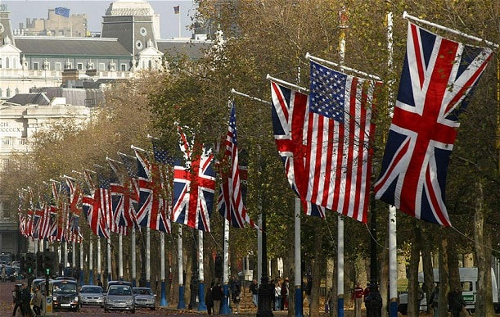The important issue is how can the UK and US work together better to our mutual benefit? I agree with our Prime Minister Theresa May. It doesn’t matter if we in the UK love or hate many of Trump’s policies, we can still work together. We should try to work with everyone. Engagement is the British approach.
The UK has a powerful Navy, it is even more powerful when it works with the US military. We all need to take out ISIS and other terrorist groups.
We have complimentary economies, we can trade together. Trump has criticised Mexico and China for taking American jobs. The UK is not Mexico or China. Currencies are always changing but in January, the figures were:
US minimum wage: $7.25 per hour
UK minimum wage: $9.31 per hour
So the minimum wage is higher in the UK than the US, we can trade together for great mutual benefit with no risk of a race to the bottom.
14. The Hysteria is somewhat external
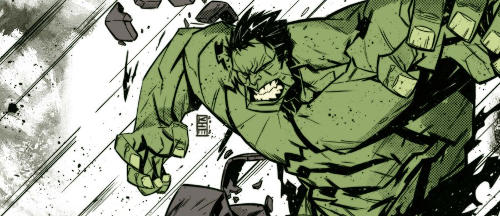I am still asking for someone to tell me why President Trump is uniquely more hysteria-inducing than his predecessors. Most criticisms, valid or not, apply to a previous President or other.
It seems to me, the biggest difference between now and when President Bush came into office in 2002, and especially between now and when Reagan came into office in 1980, is the technological difference.
It was through better use of technology that allowed Donald Trump to leapfrog the big corporate media companies and beat 16 other candidates and the Democrats.
However, the same is true on the other side, that there is an echo chamber provided by social media and the World Wide Web which seems to magnify the hysteria.
Meanwhile email and the web give the ability to organise an event or protest far more cheaply and efficiently than in the past.
15. Technology is always more important
2016 was a big year in politics but it is important to remember that politics is merely a response to cultural change which is driven by technological change. Politics is dealing with the symptoms. Technology is the underlying cause.
The invention of the printing press allowed an information revolution which led to the Renaissance, the Enlightenment and the Industrial Revolution. The consequences continued for hundreds of years.
When Sir Tim Berners-Lee created the World Wide Web, it was the final piece that allowed a new information revolution to begin. President Donald Trump and those opposing him are political results of this revolution but they will not be the last. This thing will run for hundreds of years.
As Sir Winston Churchill said, “Now this is not the end. It is not even the beginning of the end. But it is, perhaps, the end of the beginning.”